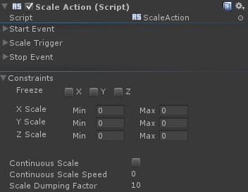

Scale Action |
Top Previous Next |
|
 The Scale Action scales up or down the game object according to the trigger’s values. The Scale Action is a Continuous Action thus you can define its start/process/stop events, as described in the section Continuous Actions. See additionally the section for details on the action triggers. The Constraints confines the scaling operation for every axis. You can configure in which axis the object will scale and what are the minimum and maximum values. When enabled, the Continuous Scale option enables continue operation on the game object to grow/shrink in a constant speed (specified in the Continuous Scale Speed parameter) as long as the Scale Trigger is fired. The Dumping Factor reduces the speed of the scaling operation with respect to the data from the trigger.
|